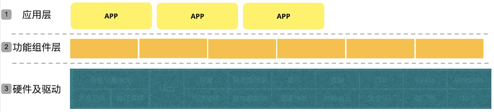
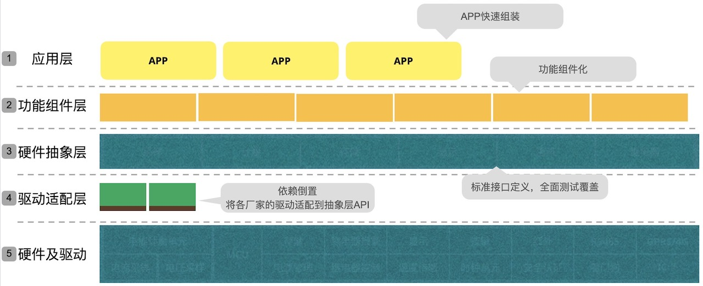

最近我给一家传统的大型电子制造业公司做嵌入式系统平台架构咨询。他们的产品硬件部分已经组件化，但是每年都有一部分元器件单元要替换，相应的软件就要修改。最大的痛点就是由于系统耦合严重，一改就容易出问题，工作量还大，团队苦不堪言。
这样的问题不仅出现在嵌入式领域，也出现在传统的软件领域。例如你是否依赖于某个外部系统，想要替换掉它却发现代码已经耦合在一起动不了？又或者某个类库/中间件已经无法满足要求，却又不敢更换？
究竟应该如何处理好外部依赖呢？
为我所用 or 依附于你
还以这家公司为例，它有很多的供应商，每年需要更换部分元器件，由此带来的软件挑战非常大。实际上这个时代我们做任何一个产品，都需要涉及很多供应商。那么我们与供应商之间究竟是什么关系，是依附于你还是为我所用？
这个定位非常关键，对我们的设计影响非常大。
什么是为我所用？就是变被动为主动，因为我需要计量单元，所以我用了某家供应商的采样和计量单元，但是，它是为我所用，如果需要，我可以换成另外一家的计量单元，而不是依附于它。
如果是依附于它的时候，系统就会慢慢的与它耦合在一起，导致将来很难被替换，一换就牵一发而动全身，软件就要大改，工作量大，质量还没保障。
因此，对于任何系统集成或者依赖时，都应该在有条件时努力做到：以我为主、为我所用。这种行为模式在软件设计领域，就叫依赖反转。
如何依赖反转
大家可能说，对于强势地位的公司或者标准制定者来说，它当然可以做到不依赖于别人，大家都为它所用。但是对普通公司来说，没有这样的能力怎么办？其实我们可以通过设计手段实现这个目标。
我们看下图的架构。虽然也是分层的架构，但是功能组件依赖于具体硬件，这种时候如果要更换硬件和驱动，上层应用必须修改。

依赖反转说的是高层次的模块不应该依赖于低层次的模块，两者都应该依赖于抽象接口。
把依赖反转原则应用到这个场景时，就得到一个更好的设计：增加了第三层硬件抽象层和第四层驱动适配层。第2层的功能组件层并不依赖于下层的硬件和驱动层，而是依赖于第三层硬件抽象层。第5层的硬件及驱动层也应该依赖于第3层硬件抽象层。如果不满足，就通过第4层驱动适配层来适配。

依赖反转有什么好处
一旦把依赖方向反转，有了硬件抽象层，就可以将不同供应商的差异隔离在抽象层之下，保持上层的干净解耦。这样做有以下好处：
- 当更换下层硬件时不影响上层软件。
- 快速反馈，极速进化：
- 基于硬件抽象层做测试替身，上层的软件测试可以全部在内存里做了，测试用例的执行可以在毫秒级完成，反馈非常快。因此可以做大量的单元测试。
- 基于硬件抽象层建立基准测试库。需要更换下层硬件和驱动时，拿这个测试基准库进行测试就可以快速验证了。而且不论什么供应商，都可以使用同一套基准测试库。如果供应商不能够直接满足，就通过适配来实现标准接口。
总结
从嵌入式系统到大型Web应用，我们的系统都无法独立存在，都依赖于外部系统或者要集成外部依赖。是依附于它还是以我为主、为我所用？有什么样的思想就有什么样的设计思路。架构师需要认真思考一下，真的把依赖反转原则用好了吗？你的系统能够快速应对外界的变化吗？